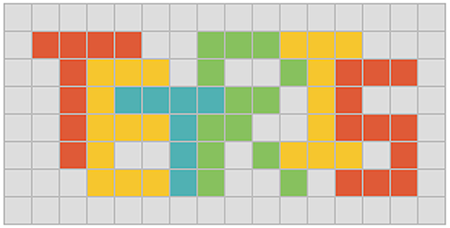

博 客
21-05
30
本网站的项目列表中有一个在线俄罗斯方块小游戏，可以直接看游戏AI的运行效果，也可以自己玩。该网页游戏是使用HTML5和Javascript编写，代码是开源的（直接浏览器查看源代码或者保存网页即可），欢迎探讨与改进。

下面就聊聊这个俄罗斯方块游戏以及AI的机制。
21-05
03
距离上一次12年圣诞节建站时发的第一篇博文，已经过去了8年多了。
期间网站关闭，除了学业繁忙的原因，主要还是因为负担不起服务器。当时是用学校实验室的服务器来运行网站，可后来学校规定（应该是响应国家的网站备案政策，无可厚非）使用校内的服务器做网站必须要去登记，显然这种拿占用公共资源的私人行为不会被批准，于是自那以后就停办了。
而关于域名的更换，本来一个域名一年的费用也就百把块钱，对于穷学生来讲也算可以接受。但是因为域名的续费要比首次购买贵一些，所以在14年就换了域名，从当时的lefthacker.com换成了现在的leftgeek.com，意思一样但是更为简洁。
之所以现在重新上线网站，其实也是机缘巧合。
期间网站关闭，除了学业繁忙的原因，主要还是因为负担不起服务器。当时是用学校实验室的服务器来运行网站，可后来学校规定（应该是响应国家的网站备案政策，无可厚非）使用校内的服务器做网站必须要去登记，显然这种拿占用公共资源的私人行为不会被批准，于是自那以后就停办了。
而关于域名的更换，本来一个域名一年的费用也就百把块钱，对于穷学生来讲也算可以接受。但是因为域名的续费要比首次购买贵一些，所以在14年就换了域名，从当时的lefthacker.com换成了现在的leftgeek.com，意思一样但是更为简洁。
之所以现在重新上线网站，其实也是机缘巧合。
12-12
25
今天是2012年12月25日，在常人看来可能只是个普通的圣诞节，但却是我非常重要的日子：由我自己编写的个人博客网站lefthacker.com终于发布了！
想做博客的想法早在去年初的时候就有了，在那段时间里迷上了Java Web开发，并且尝试做了一些小网站，像论坛和班级网站（显然没发布）等。在一次上网找资料的过程中，偶然发现了计算机牛人陈皓（学计算机的应该有很多人知道他吧）的博客：酷壳，感觉他的技术博客非常有深度，同时也非常有趣（程序员的乐趣，你应该懂的），看他讲自己写博客的经历时让我觉得边工作边写博客的生活是多么有趣啊。不只是陈皓，许多其他人也是这样，虽然质量参差不齐，但是看得出，大家都能从自己喜爱的技术博客中获得乐趣。此时的我也萌发了建博客的想法，但更多的只是羡慕。
真正让我想做自己博客的原因其实是：我*不*喜欢写博客！（这里的*不是屏蔽，而是强调，个人习惯）听起来肯定很矛盾吧，别急，且听我一一说明。
想做博客的想法早在去年初的时候就有了，在那段时间里迷上了Java Web开发，并且尝试做了一些小网站，像论坛和班级网站（显然没发布）等。在一次上网找资料的过程中，偶然发现了计算机牛人陈皓（学计算机的应该有很多人知道他吧）的博客：酷壳，感觉他的技术博客非常有深度，同时也非常有趣（程序员的乐趣，你应该懂的），看他讲自己写博客的经历时让我觉得边工作边写博客的生活是多么有趣啊。不只是陈皓，许多其他人也是这样，虽然质量参差不齐，但是看得出，大家都能从自己喜爱的技术博客中获得乐趣。此时的我也萌发了建博客的想法，但更多的只是羡慕。
真正让我想做自己博客的原因其实是：我*不*喜欢写博客！（这里的*不是屏蔽，而是强调，个人习惯）听起来肯定很矛盾吧，别急，且听我一一说明。